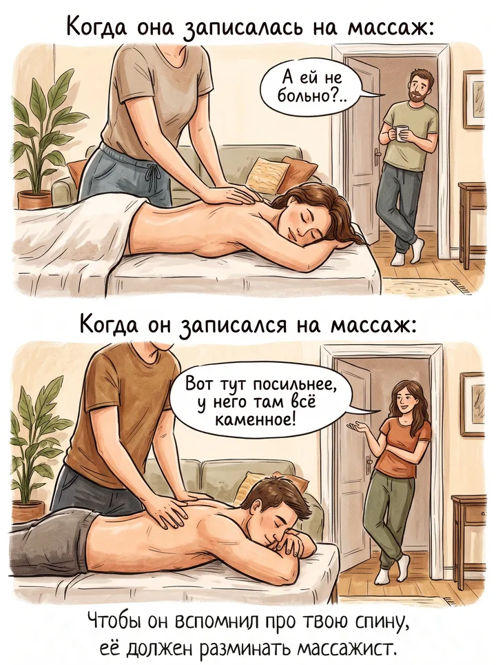
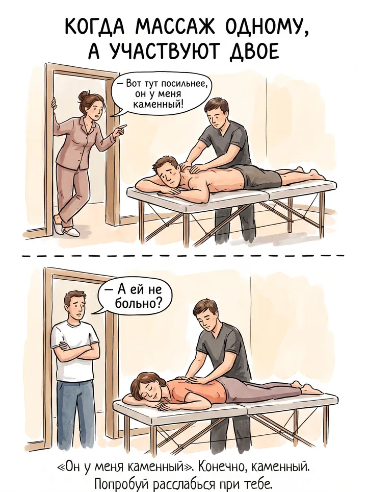
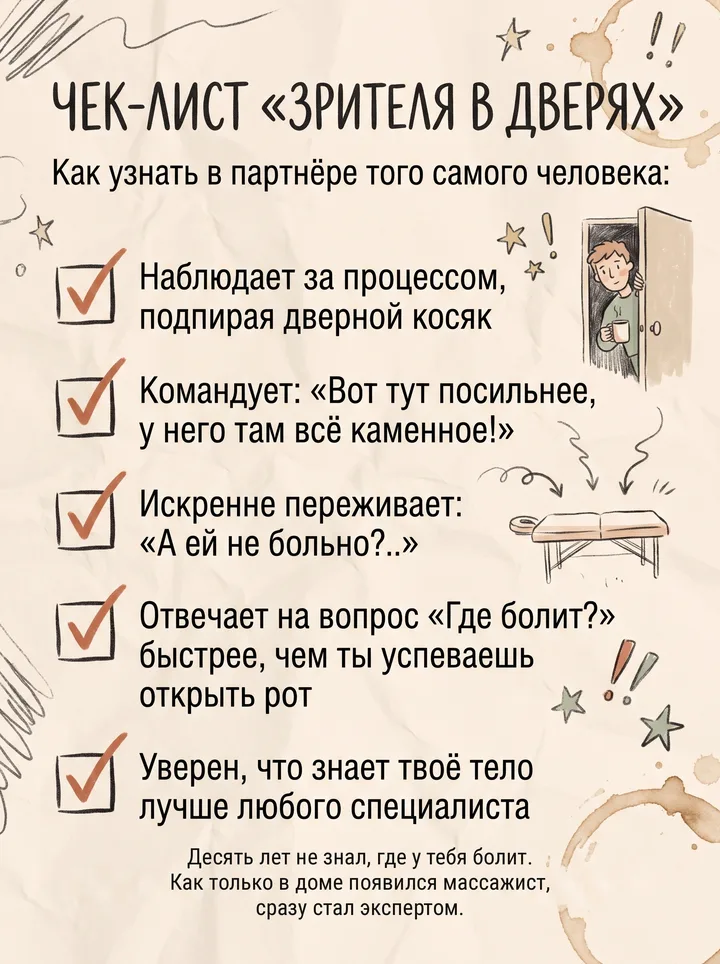
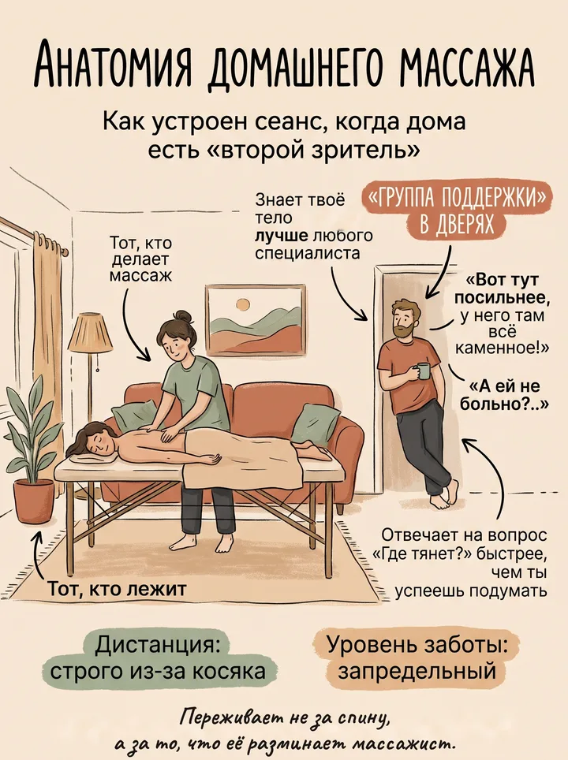

Через плечо

Через плечо.
На выезде у меня почти всегда есть второй зритель.
Оба уверены, что знают тело второго лучше меня.

Он у меня каменный.
Жена стоит в дверях и смотрит, как я работаю с плечами мужа.
Муж молчит. Ему было хорошо, теперь ещё и неловко.


Анатомия домашнего массажа.
Через неделю меняются местами. Муж спрашивает: «А ей не больно?»
Она лежит и пытается вспомнить, когда он в последний раз так за неё переживал.